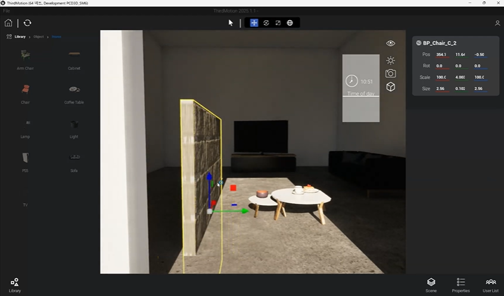

ThirdMotion
| Unreal 3D 에디팅 툴 | |
| BluePrintC++MutiplayReplicationUMGUnreallistenServer네트워크 | |
| https://www.youtube.com/watch?v=SZ7YIKsMOPA | |
| https://github.com/jjonjung/ThirdMotion | |
| ✔️ Listen Server Actor 동기화 ✔️ User List·Memo 영속화 구현 ✔️ TwinMotion 모티브 UMG 구현 |
✔️ 프로젝트 소개
UE5.6 기반 멀티플레이어 협업 3D 편집 툴
| 항목 | 내용 |
|---|---|
| 장르 | 멀티플레이어 협업 3D 편집 툴 |
| 기술 스택 | - Unreal Engine 5.6 - C++ - Blueprint - UMG - Listen Server |
| 담당 개발 내용 | - UI/UX 시스템 전체 (MVC 아키텍처 설계 및 구현) - TopBar / BottomBar / ViewportWidget 디자인 및 기능 구현 - Light System UI 및 실시간 조정 구현 - Voice Chat - 실시간 접속자 리스트 구현 - 실시간 멀티 Memo System |
✔️ 프로젝트 시연 영상
✔️ 간트차트
✔️ 프로그램 구조
🔹프로그램 FLOW

🔹참고 인터페이스: TwinMotion

✔️ 핵심 기술 역량
직무 기술서
| 역량 | 구현 사례 | 판단 근거 | 기술 깊이 |
|---|---|---|---|
| MVC 기반 대규모 UI 아키텍처 | BaseWidget + WidgetController + Data 3계층 구조 | View와 Logic 완전 분리, TopBar/BottomBar/RightPanel/Viewport 등 10개 이상 패널 동시 관리 | Observer 패턴 + WidgetSwitcher 동적 분기 |
| Listen Server 실시간 Replication 최적화 | FPropertyDelta 히스토리 복제 시스템 | 개별 RPC 순서 문제 + 지연 클라이언트 상태 불일치 해결 필요 | 속성 변경 이력 전체 복제로 지연 접속자 자동 최종 상태 복구 |
| GUID 기반 C++ 액터 관리 시스템 | USceneManager (WorldSubsystem) + EditSyncComponent | 멀티플레이어 환경에서 모든 클라이언트가 동일 액터를 정확히 식별해야 함 | TMap<FGuid, TWeakObjectPtr> 캐싱 + FEditMeta 구조 설계 |
| 실시간 협업 편집 시스템 | 4종 Light 실시간 편집 + 인월드 Memo + Ghost Preview | 조명·메모·액터 스폰이 동시에 동기화되어야 함 | Server Authoritative + NetMulticast RPC + PropertyDelta 통합 |
- Architectural Logic: Listen Server 기반 멀티플레이어 협업 툴 전체 아키텍처 설계 및 구현 능력 보유
- Network Robustness: FPropertyDelta 히스토리 기법으로 네트워크 지연·접속 지연 문제를 근본적으로 해결
- UI Scalability: 10개 이상의 복잡한 패널을 MVC 패턴으로 안정적으로 관리하고 확장 가능
- Advanced Unreal: WorldSubsystem, Replication, UMG 커스텀 Controller, Runtime Gizmo, LightEditLibrary 등 고급 기능 종합 활용
✔️ 구현 상세 내용
File Menu 기능 구현


기존 폴더 및 다른 프로그램 호출 방식
🔸기술 구현 방식

FPlatformProcess::CreateProc(
*Path, // 실행 파일 경로
TEXT(""), // 인자 (여기서는 없음)
true, // 새 프로세스를 독립 실행
false, // 에디터 종료 시 함께 종료 안 함
false, // 표준 입출력 연결 안 함
nullptr, // 프로세스 핸들
0, // 우선순위
*ProjectDir, // 실행 시 기준 디렉터리
nullptr // 파이프
);
Screenshots & VideoCaptures
🔸기술 구현 로직/방식


카메라 뷰 전환
🔸기술 구현 로직/방식
🔹 기능 구현 Flow

버튼 입력을 받으면 SetCameraView() 함수가 호출됩니다. 이후 PlayerStart 또는 PostProcessVolume을 기준으로 중심점을 계산하고, 뷰 타입에 따라 방향 벡터를 산출합니다. 마지막으로 카메라 위치와 회전을 계산하여 Pawn 또는 임시 카메라로 시점을 전환합니다.
🔹 🔗
🔹 카메라 뷰 구현 비교

Scene List
현재 level에 배치 된 actor 실시간 List
🔸기술 구현 로직/방식


| Model | Scene List | World에서 Actor 감지하여 UI에 표시할 계층 구조 데이터 관리(Actor, ActorType) SceneItemData 구현 요소 리스트(RefreshFromWorld(), FindItemByActor()...) |
| View | RightPanel | 화면 UI 표시, TreeView로 계층 구조 시각화, 사용자 입력 전달(Controller에게 위임) |
| Controller | SceneControlle | Scene 기능 로직 처리, 데이터와 사용자인터페이스 요소들을 잇는 다리역할 (SelectActor(), ToggleActorVisibility() 등) |
🔹언리얼 네트워크
→ 현실 배포할 프로그램이라면 Dedicated 가 적합하지만, 학습을 위한 프로젝트이기에 Listen 서버 선택


{kind=link}
{kind=link}
{kind=link}
실시간 온라인 사용자 List 및 음성 채팅
접속하고 있는 사용자 목록 및 음성 채팅
🔸기술 구현 로직/방식


| ConnectedUserData - IPAddress (FString) - PlayerName (FString) - PlayerId (int32) - ConnectedTime (float) | 1. GetWorld()->GetGameState: 현재 상태 정보 2. PlayerArray: GameState->PlayerArray, APlayerState 객체 배열 3. PlayerState: PlayerState->GetPlayerId() 4. IP 주소 확인: PlayerController, GetPlayerIPAddress -> IP 주소 얻음 5. 데이터 저장: FConnectedUserData 추출 정보 저장, 배열 반환 | - IP:Port 형식의 주소 -> IP 파싱 | 배열을 순회하며 문자열로 조합, 최종 텍스트를 설정-> 화면 표시 |
🔸listen server 음성 채팅 구현
DefaultEngine.ini
[Voice]
bEnabled=true
[/Script/Engine.GameSession]
bRequiresPushToTalk=true
[OnlineSubsystem]
bHasVoiceEnabled=truePlayerController
APlayerController::StartTalking()
APlayerController::StopTalking()캐릭터에서 PlayerController를 가져와 실행
- 보이스를 킬 때 -
StartTalking
- 보이스를 끌 때 -
StopTalking
Memo
🔸UI
실시간 멀티 동기화 메모

네트워크 동기화
- RPC 흐름 이해 및 Replication 범위 최소화
- 서버 기준 판정 및 GUID 기반 일관된 액터 식별
- FPropertyDelta 히스토리 방식으로 지연 클라이언트 자동 복구
네트워크 및 동기화 전략
- RPC & Replication: FPropertyDelta와 핵심 메타만 복제하여 대역폭 소모 최소화
- GUID 기반 식별: 모든 액터에 FGuid 부여 → 클라이언트 간 동일 액터 참조 보장
- 히스토리 복제: R_PropsAppliedHistory 전체를 복제하여 지연 접속자도 최종 상태로 복구
| 항목 | 기존 (개별 RPC) | 개선 (FPropertyDelta 히스토리) |
|---|---|---|
| 동기화 지연 | 불일치 발생 | 최종 상태 100% 복구 |
| 대역폭 | 불필요 반복 전송 | 점진적 Delta 복제 |
| 충돌 처리 | 없음 | Edit Lock + Server Authoritative |
OOP 설계
구조 설계 원칙
1. 책임 분리 (Single Responsibility)
- Widget: 오직 UI 렌더링만 담당
- WidgetController: UI 이벤트 처리 및 RPC 요청만 담당
- SceneManager: 액터 생명주기 및 GUID 레지스트리만 담당
- EditSyncComponent: 해당 액터의 속성 복제/적용만 담당
2. 의존성 최소화
- 직접 참조 없이 Delegate 기반 이벤트 연결
- Widget → Controller → PlayerController RPC만 호출
3. 디자인 패턴 적용
| 패턴 | 적용 위치 | 목적 |
|---|---|---|
| MVC | Widget + WidgetController | UI 관심사 분리 |
| Observer | FOnActorSelected Delegate | 반응형 UI 갱신 |
| Component | EditSyncComponent | 액터별 기능 조합 |
트러블 슈팅
카메라 전환 시 지오메트리 충돌 및 급격한 이동 문제
문제 상황
다각도 뷰 전환(Front/Back/Top/Bottom/Left/Right) 버튼 클릭 시
- 카메라가 벽이나 오브젝트 안으로 들어가 시야가 가려짐
- 전환 순간 위치·회전이 순간적으로 점프(jump)하여 어지러움 유발
- 특히 복잡한 씬에서 PostProcessVolume이나 PlayerStart 기준 계산 후 바로 적용되면서 부자연스러움 극대화
문제 원인
- 충돌 미고려
- 중심점(PlayerStart 또는 PostProcessVolume) 기준으로 고정된 오프셋만 적용
- Line Trace 없이 바로 SetActorLocation / SetControlRotation 호출 → 지오메트리 침투
- 전환 애니메이션 부재
- 즉시(Instant) 위치·회전 설정 → 프레임 간 급격한 변화
- Lerp / Interpolation 미적용으로 사용자 경험 저하
- 임시 카메라 전환 로직의 단순성
- Pawn → TempCameraActor 전환 시 부드러운 핸드오버(handover) 처리 부족
해결 방법
3단계 우선순위
1-1. 카메라 충돌 방지 – Line Trace 기반 보정
목표 위치로 가는 경로에 Line Trace 수행 → 충돌 시 카메라를 충돌 지점 직전으로 Pull-back
FHitResult Hit;
FCollisionQueryParams Params;
Params.AddIgnoredActor(GetPawn());
bool bHit = GetWorld()->LineTraceSingleByChannel(
Hit,
CenterLocation,
TargetLocation,
ECC_Visibility, // or ECC_Camera
Params
);
if (bHit)
{
// 충돌 시 카메라를 벽 바로 앞까지 당김 (약간의 여유 Margin 추가)
TargetLocation = Hit.Location + (Hit.Normal * CameraCollisionMargin); // 10~30cm
}1-2. 부드러운 카메라 전환 – VInterpTo / FMath::VInterpTo 적용
즉시 이동 대신 매 틱 보간 → 자연스러운 슬라이드/회전 연출
// TempCameraActor Tick 또는 Timer로 매 프레임 호출
void ATempCameraActor::SmoothTransitionTo(FVector TargetLoc, FRotator TargetRot, float DeltaTime)
{
FVector CurrentLoc = GetActorLocation();
FRotator CurrentRot = GetActorRotation();
FVector NewLoc = FMath::VInterpTo(
CurrentLoc, TargetLoc, DeltaTime, InterpolationSpeed); // Speed: 8~15 추천
FRotator NewRot = FMath::RInterpTo(
CurrentRot, TargetRot, DeltaTime, RotationInterpSpeed);
SetActorLocationAndRotation(NewLoc, NewRot);
}실행 및 성과 증명
2-1. 정량적/기술적 개선
| 지오메트리 침투 | Line Trace로 발생 0% |
|---|---|
| 전환 시 어지러움 | 부드러운 슬라이드/회전으로 최소화 |
| 사용자 체감 품질 | 전문 편집 툴 수준의 자연스러움 |
| 복잡한 씬 대응력 | 충돌 보정으로 안정성 대폭 향상 |